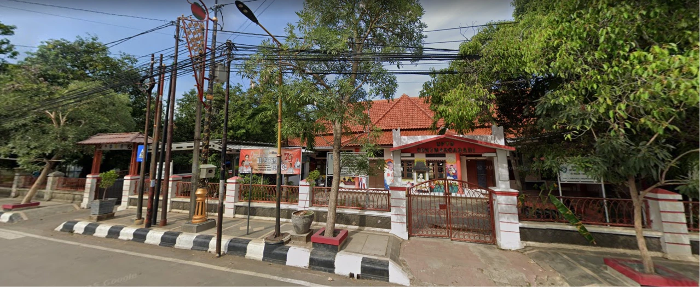

Tentang Diriku
Perkenalan singkat tentang diriku.
Halo! Saya Dinan Ahmad Zaydan, seorang pelajar yang senang belajar hal-hal baru dan terus mengembangkan kemampuan diri. Saya memiliki ketertarikan pada bahasa Inggris dan kegiatan yang dapat meningkatkan rasa percaya diri.
Saya percaya bahwa setiap pengalaman merupakan kesempatan untuk belajar, bertumbuh, dan menjadi pribadi yang lebih baik setiap harinya.
Timeline Pendidikan
Perjalanan pendidikanku.
-

SD
SDN 3 Margadadi Indramayu
Keahlian
Kombinasi kemampuan teknis dan interpersonal yang terus kukembangkan.
Hard Skills
- English Speaking
- Reading
- Writing
Soft Skills
- Self Confidence
- Continuous Learning
- Problem Solving
Prestasi & Pengalaman
Beberapa prestasi yang telah diraih dalam perjalanan pendidikan dan pengalamanku.
-
Olimpiade OMNI Lokal Competition Indramayu
Sebagai peserta dalam kompetisi Olimpiade OMNI Lokal Competition Indramayu Tingkat SD yang diadakan oleh OMNI SAINS di SMK Endang Darma Ayu pada Tahun 2026.
Lihat Sertifikat
Motto Hidup
“Small steps today lead to big dreams tomorrow.”